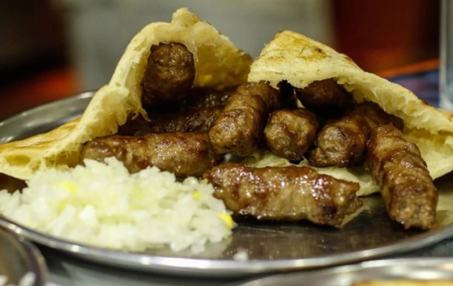
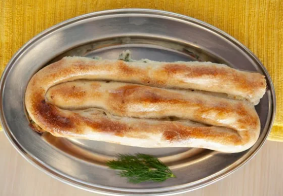

J's Pitaria
J's Pitaria is owned by a couple named Josi and Zamir, Zamir, has dedicated his life to his passion: making fresh, authentic, healthy food with the highest quality of ingredients. Not many get to do what they love for a living; Zamir knows this and lives each day to the fullest, expertly crafting delectable meals by hand daily. In each dish he creates, he pours his care, expertise, and story with the help of his most important tools: his own two hands.
>